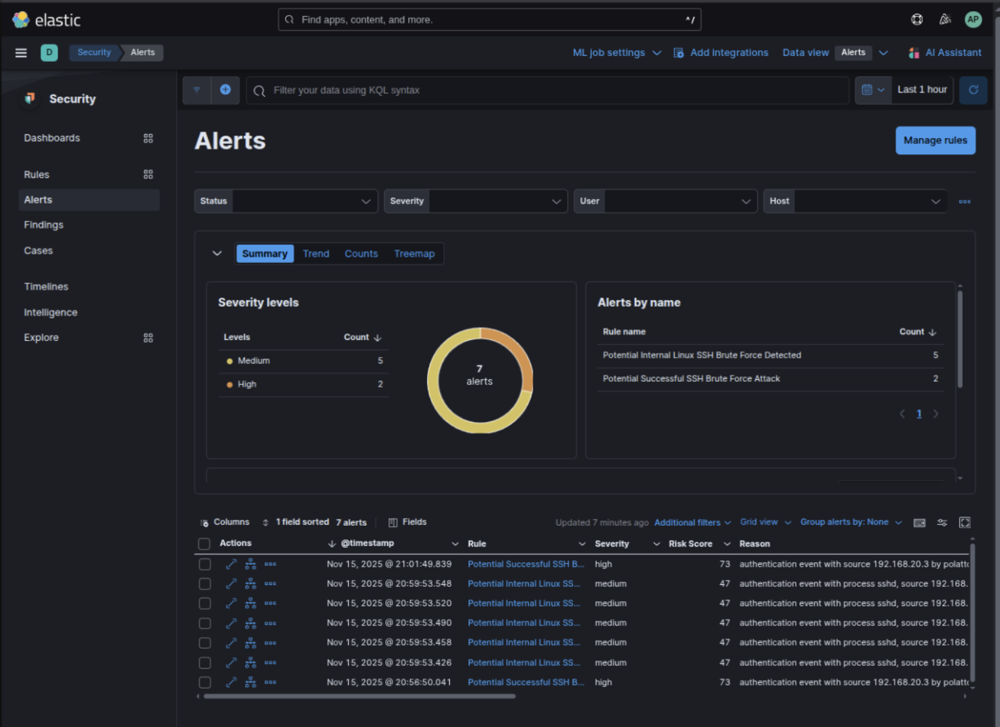

Monitoramento de Segurança de Hosts com Elastic SIEM para Conformidade com PCI-DSS
Este documento fornece um guia passo a passo para configurar o monitoramento de segurança de hosts usando o Elastic SIEM com Auditbeat e Filebeat para atender aos requisitos do PCI-DSS (Padrão de Segurança de Dados da Indústria de Cartões de Pagamento). Ele inclui a instalação e configuração dos Beats, a criação de políticas personalizadas de Gerenciamento do Ciclo de Vida do Índice (ILM), a implementação do Controle de Acesso Baseado em Funções (RBAC) e a validação de regras de detecção. Este guia foi desenvolvido para usuários iniciantes no Elastic SIEM, servindo como um manual de instruções para fins educacionais e de conformidade.
O que é o Elastic SIEM?
O Elastic SIEM (Security Information and Event Management) é um módulo do Elastic Stack (Elasticsearch, Kibana, Beats, Logstash) projetado para coletar, analisar e visualizar eventos de segurança para detecção de ameaças e resposta a incidentes. Ele utiliza os poderosos recursos de busca e análise do Elasticsearch para monitorar hosts, redes e aplicativos, gerando alertas para atividades suspeitas, como ataques de força bruta, malware ou acesso não autorizado.
Os principais recursos incluem:
-
Ingestão de Dados: Coleta logs e eventos via Elastic Beats (agentes leves como Auditbeat e Filebeat).
-
Regras de Detecção: Regras pré-configuradas e personalizadas (por exemplo, EQL, KQL) para identificar ameaças.
-
Dashboards: Visualizações no Kibana para logs, alertas e linhas do tempo.
-
Compliance: Suporta PCI-DSS, GDPR e outros padrões, garantindo trilhas de auditoria, retenção de logs e controles de acesso.
O Elastic SIEM é ideal para conformidade com PCI-DSS, pois fornece registro centralizado, monitoramento em tempo real e acesso baseado em funções para atender a requisitos como trilhas de auditoria (Req. 10.2), segurança de logs (Req. 10.5) e acesso restrito (Req. 7).
Monitoramento de Hosts com Elastic Beats
O Elastic Beats é um serviço leve de coleta de dados que envia eventos de segurança para o Elasticsearch. Para monitoramento de hosts, utilizamos:
- Auditbeat: Captura eventos do auditd (por exemplo, acesso a arquivos, execução de processos) e alterações de integridade de arquivos diretamente do kernel do Linux.
- Filebeat: Coleta logs do sistema (por exemplo,
/var/log/auth.log,/var/log/syslog) e, opcionalmente, logs do auditd para análise adicional.
Fleet Server vs. Beats Autônomo
O Elastic oferece duas abordagens para gerenciar o Beats:
-
Fleet Server:
- Uma solução de gerenciamento centralizada dentro do Elastic Stack para implantar e configurar agentes Beats.
- Prós:
- Simplifica o escalonamento e a atualização de múltiplos agentes.
- Fornece uma interface de usuário no Kibana para gerenciamento de políticas.
- Suporta inscrição de agentes e configuração remota.
- Contras:
- Requer configuração adicional (implantação do Fleet Server (Já instaldo em deployment do Elastic Cloud)).
- Aumenta a sobrecarga para configurações pequenas.
- Menos flexível para configurações personalizadas.
- Ainda não foi possível configurar o Fleet para ingressar Hosts dinâmicos na cloud. Isso é necessário para ambientes com escalonamento automático, como as VMSS da Azure.
- Caso de uso: Ambientes grandes com muitos hosts que necessitam de controle centralizado.
-
Beats independentes:
- Os Beats são instalados e configurados manualmente em cada host.
- Prós:
- Controle total sobre os arquivos de configuração (por exemplo,
auditbeat.yml,filebeat.yml). - Sem dependência do Fleet Server, reduzindo a complexidade.
- Ideal para fluxos de dados personalizados, políticas ILM e configurações de pequena escala.
- Controle total sobre os arquivos de configuração (por exemplo,
- Contras:
- Atualizações e configurações manuais para cada host.
- Sem interface de usuário centralizada para gerenciamento.
- Caso de uso: Hosts individuais ou ambientes que necessitam de personalização detalhada.
Abordagem deste guia: Utilizamos Beats independentes (Auditbeat e Filebeat) para obter o máximo controle sobre fluxos de dados personalizados (.ds-auditbeat-pci-*, .ds-filebeat-pci-*), políticas ILM (pci-logs-12month) e RBAC, em conformidade com os requisitos do PCI-DSS e com sua preferência por configurações independentes.
Conformidade com PCI-DSS com o Elastic SIEM
O Elastic SIEM oferece suporte a diversos requisitos do PCI-DSS essenciais para a segurança dos dados de cartões de pagamento:
-
Requisito 7 (Restringir Acesso): O RBAC garante que apenas usuários autorizados acessem os logs, implementado por meio de funções do Elasticsearch e privilégios do Kibana.
-
Requisito 10.2 (Trilhas de Auditoria): O Auditbeat e o Filebeat capturam as ações do usuário (por exemplo, logins SSH, acesso a arquivos, execução de processos) com registros de data e hora e resultados.
-
Requisito 10.5.? (Trilhas de Auditoria Seguras): Políticas ILM personalizadas (
pci-logs-12month) impõem retenção de 12 meses e imutabilidade (viafreezena fase fria). -
Requisito 10.4.? (Revisão Diária de Logs): As regras de detecção do SIEM (por exemplo, alertas de força bruta) permitem o monitoramento e o alerta automatizados para eventos de segurança.
-
Requisito 11.5.? (Monitoramento de Integridade de Arquivos): O módulo
file_integritydo Auditbeat monitora diretórios críticos (/etc,/bin) em busca de alterações não autorizadas.
Essa configuração garante a conformidade por meio do registro, proteção e análise de eventos de segurança, com acesso restrito e retenção a longo prazo.
Política ILM personalizada (pci-logs-12month)
As políticas de Gerenciamento do Ciclo de Vida do Índice (ILM) gerenciam o ciclo de vida dos índices do Elasticsearch, garantindo a conformidade com os requisitos de retenção. Criamos uma política ILM personalizada, pci-logs-12month, para atender ao Requisito 10.5 do PCI-DSS (retenção de logs por 12 meses).
Policy Definition (pci-logs-12month.json):
{
"policy": {
"phases": {
"hot": {
"min_age": "0ms",
"actions": {
"rollover": {
"max_age": "30d",
"max_primary_shard_size": "50gb"
},
"set_priority": { "priority": 100 }
}
},
"warm": {
"min_age": "3d",
"actions": {
"allocate": { "require": { "data": "warm" } },
"forcemerge": { "max_num_segments": 1 },
"set_priority": { "priority": 50 }
}
},
"cold": {
"min_age": "90d",
"actions": {
"allocate": { "require": { "data": "cold" } },
"set_priority": { "priority": 0 },
"freeze": {}
}
},
"delete": {
"min_age": "365d",
"actions": { "delete": {} }
}
}
}
}Principais Funcionalidades:
- Hot Phase: Rotaciona os índices após 30 dias ou 50 GB, priorizando o desempenho.
- Warm Phase: Após 3 dias, otimiza o armazenamento com
forcemerge. - Cold Phase: Após 90 dias, congela os índices para imutabilidade (PCI-DSS Req. 10.5).
- Delete Phase: Exclui os índices após 365 dias, atendendo ao requisito de retenção de 12 meses.
Essa política é aplicada aos fluxos de dados do Auditbeat e do Filebeat por meio da config setup.ilm.policy_file, ou, pre-definida no ElasticSearch.
RBAC para Conformidade com PCI-DSS
O Controle de Acesso Baseado em Funções (RBAC) restringe o acesso a dados de segurança, atendendo ao Requisito 7 do PCI-DSS. Definimos funções para os fluxos de dados do Auditbeat e do Filebeat (.ds-auditbeat-pci-*, .ds-filebeat-pci-*).
Auditbeat RBAC
-
Viewer Role (
pci_audit_viewer):POST _security/role/pci_audit_viewer { "indices": { "auditbeat-pci-polatto": { "privileges": ["read", "view_index_metadata"], "query": "{\"match\": {\"event.dataset\": \"auditbeat\"}}" } }, "applications": [ { "application": "kibana-.kibana", "privileges": ["feature_discover.read", "feature_dashboard.read", "feature_logs.read"], "resources": ["*"] } ] }- Concede acesso somente leitura aos dados do Auditbeat e aos recursos do Kibana (Discover, Dashboards, Logs).
-
Admin Role (
pci_audit_admin):POST _security/role/pci_audit_admin { "cluster": ["manage_ilm"], "indices": { "auditbeat-pci-polatto": { "privileges": ["read", "view_index_metadata", "delete_index", "manage"], "query": "{\"match\": {\"event.dataset\": \"auditbeat\"}}" } }, "applications": [ { "application": "kibana-.kibana", "privileges": ["feature_index_management.all", "feature_ilm.all", "feature_discover.read"], "resources": ["*"] } ] }- Adiciona privilégios de gerenciamento de ILM e exclusão de índices.
-
User Assignment:
POST _security/user/pci_audit_user { "password": "secure_password", "roles": ["pci_audit_viewer"], "full_name": "PCI Audit User" }
Filebeat RBAC
-
Viewer Role (
pci_filebeat_viewer):POST _security/role/pci_filebeat_viewer { "indices": { "filebeat-pci-polatto": { "privileges": ["read", "view_index_metadata"], "query": "{\"bool\":{\"should\":[{\"match\":{\"event.dataset\":\"filebeat\"}},{\"match\":{\"event.dataset\":\"auditbeat\"}}]}}" } }, "applications": [ { "application": "kibana-.kibana", "privileges": ["feature_discover.read", "feature_dashboard.read", "feature_logs.read"], "resources": ["*"] } ] }- Abrange eventos analisados tanto pelo Filebeat quanto pelo auditd.
-
Admin Role (
pci_filebeat_admin):POST _security/role/pci_filebeat_admin { "cluster": ["manage_ilm"], "indices": { "filebeat-pci-polatto": { "privileges": ["read", "view_index_metadata", "delete_index", "manage"], "query": "{\"bool\":{\"should\":[{\"match\":{\"event.dataset\":\"filebeat\"}},{\"match\":{\"event.dataset\":\"auditbeat\"}}]}}" } }, "applications": [ { "application": "kibana-.kibana", "privileges": ["feature_index_management.all", "feature_ilm.all", "feature_discover.read"], "resources": ["*"] } ] } -
User Assignment:
POST _security/user/pci_filebeat_user { "password": "secure_password", "roles": ["pci_filebeat_viewer"], "full_name": "PCI Filebeat User" }
Compliance: Essas funções garantem que apenas usuários autorizados acessem os registros, com os administradores gerenciando o ILM e os índices, em conformidade com o Requisito 7 do PCI-DSS.
Instalando e configurando o Elastic Beats
Isntalando o Auditbeat e o Filebeat como agentes independentes em um host Linux (por exemplo, Ubuntu 22.04) para coletar eventos de segurança para conformidade com o PCI-DSS.
Pré-requisitos
- Host: Linux com
auditdinstalado (sudo apt install auditd). - Elastic Cloud: Endpoint (ex.:
https://your-cluster.es.us-central1.gcp.cloud.es.io:443). - Credenciais: Cloud ID, usuário, ou API Key.
- Permissões: acesso
sudopara instalação e acesso aos logs (/var/log/auth.log,/var/log/audit/audit.log).
Instalação e Configuração do Auditbeat
O Auditbeat coleta eventos do auditd (acesso a arquivos, execução de processos) e alterações na integridade dos arquivos.
-
Install Auditbeat:
sudo apt update sudo apt install -y curl curl -L -O https://artifacts.elastic.co/downloads/beats/auditbeat/auditbeat-8.11.1-amd64.deb sudo dpkg -i auditbeat-8.11.1-amd64.deb -
Configure o Auditbeat (
/etc/auditbeat/auditbeat.yml):###################### Auditbeat Configuration Example ######################### # You can find the full configuration reference here: # https://www.elastic.co/guide/en/beats/auditbeat/8.11/auditbeat-reference-yml.html # =========================== Modules configuration ============================ auditbeat.modules: - module: auditd # Load audit rules from separate files. Same format as audit.rules(7). audit_rule_files: [ '${path.config}/audit.rules.d/*.conf' ] - module: file_integrity paths: - /bin - /usr/bin - /sbin - /usr/sbin - /etc - module: system datasets: - package # Installed, updated, and removed packages period: 5m # The frequency at which the datasets check for changes. For static vms, i consider keep 5m - module: system datasets: - host # General host information, e.g. uptime, IPs - login # User logins, logouts, and system boots. - process # Started and stopped processes # - socket # Opened and closed sockets. It's not critial for PCI DSS (which focuses on auditd and file integrity events), so I keep it disabled to reduce noise - user # User information # How often datasets send state updates with the # current state of the system (e.g. all currently # running processes, all open sockets). state.period: 12h # Enabled by default. Auditbeat will read password fields in # /etc/passwd and /etc/shadow and store a hash locally to # detect any changes. user.detect_password_changes: true # File patterns of the login record files. login.wtmp_file_pattern: /var/log/wtmp* login.btmp_file_pattern: /var/log/btmp* # ================================== General =================================== # The tags of the shipper are included in their field with each # transaction published. tags: ["pci", "vmss-proxy"] # =============================== Elastic Cloud ================================ # These settings simplify using Auditbeat with the Elastic Cloud (https://cloud.elastic.co/). # The cloud.id setting overwrites the `output.elasticsearch.hosts` and # `setup.kibana.host` options. # You can find the `cloud.id` in the Elastic Cloud web UI. cloud.id: "acqio-es-development:******==" # The cloud.auth setting overwrites the `output.elasticsearch.username` and # `output.elasticsearch.password` settings. The format is `<user>:<pass>`. cloud.auth: "Auditbeat_Systemic_User:******" # ================================== Outputs =================================== # Configure what output to use when sending the data collected by the beat. # ---------------------------- Elasticsearch Output ---------------------------- output.elasticsearch: # Array of hosts to connect to. # hosts: ["localhost:9200"] # Protocol - either `http` (default) or `https`. #protocol: "https" # Authentication credentials - either API key or username/password. #api_key: "id:api_key" #username: "elastic" #password: "changeme" # Optional data stream or index name. The default is "auditbeat-%{[agent.version]}". # In case you modify this pattern you must update setup.template.name and setup.template.pattern accordingly. index: "auditbeat-pci-%{[agent.version]}" # ================================= Processors ================================= # Configure processors to enhance or manipulate events generated by the beat. processors: - add_host_metadata: ~ - add_cloud_metadata: ~ - add_docker_metadata: ~ # ================================== Template ================================== # A template is used to set the mapping in Elasticsearch # By default template loading is enabled and the template is loaded. # These settings can be adjusted to load your own template or overwrite existing ones. # Set to false to disable template loading. setup.template.enabled: true # Template name. By default the template name is "auditbeat-%{[agent.version]}" # The template name and pattern has to be set in case the Elasticsearch index pattern is modified. setup.template.name: "auditbeat-pci-%{[agent.version]}" # Template pattern. By default the template pattern is "auditbeat-%{[agent.version]}" to apply to the default index settings. # The template name and pattern has to be set in case the Elasticsearch index pattern is modified. setup.template.pattern: "auditbeat-pci-%{[agent.version]}" # Path to fields.yml file to generate the template setup.template.fields: "${path.config}/fields.yml" setup.template.settings: index.number_of_shards: 1 # ====================== Index Lifecycle Management (ILM) ====================== # Configure index lifecycle management (ILM) to manage the backing indices # of your data streams. # Enable ILM support. Valid values are true, or false. setup.ilm.enabled: true # Set the lifecycle policy name. The default policy name is # 'beatname'. setup.ilm.policy_name: "pci-logs-12month" # The path to a JSON file that contains a lifecycle policy configuration. Used # to load your own lifecycle policy. # # Use setup.ilm.policy_file instead of output.elasticsearch.ilm.policy_name. # This tells Auditbeat to load the ILM policy from the JSON file during setup. #setup.ilm.policy_file: "/usr/share/auditbeat/ilm-pci-logs-12month.json" # Disable the check for an existing lifecycle policy. The default is true. # If you set this option to false, lifecycle policy will not be installed, # even if setup.ilm.overwrite is set to true. #setup.ilm.check_exists: true # Overwrite the lifecycle policy at startup. The default is false. #setup.ilm.overwrite: false -
Setup e Start:
sudo auditbeat setup --template --ilm-policy --dashboards sudo systemctl enable auditbeat sudo systemctl start auditbeat -
Validando:
sudo journalctl -u auditbeat sudo cat /etc/shadow # Trigger auditd event- Kibana Dev Tools:
GET _data_stream/auditbeat-pci-8.11.1 GET auditbeat-pci-8.11.1/_search?q=event.module:auditd
- Kibana Dev Tools:
Instalação e Configuração do Filebeat
O Filebeat coleta logs do sistema (auth.log, syslog) e logs do auditd.
-
Instalando Filebeat:
curl -L -O https://artifacts.elastic.co/downloads/beats/filebeat/filebeat-8.11.1-amd64.deb sudo dpkg -i filebeat-8.11.1-amd64.deb -
Configure o Filebeat (
/etc/filebeat/filebeat.yml):###################### Filebeat Configuration Example ######################### # You can find the full configuration reference here: # https://www.elastic.co/docs/reference/beats/filebeat/filebeat-reference-yml # =========================== Modules configuration ============================ filebeat.modules: - module: system enabled: true syslog: enabled: true var.paths: ["/var/log/syslog*"] auth: enabled: true var.paths: ["/var/log/auth.log*"] #=========================== Filebeat inputs ============================= filebeat.inputs: - type: log enabled: true paths: - /var/log/audit/audit.log tags: ["auditd", "pci-audit"] fields: event.dataset: auditbeat event.module: auditd # =============================== Elastic Cloud ================================ # These settings simplify using Auditbeat with the Elastic Cloud (https://cloud.elastic.co/). # The cloud.id setting overwrites the `output.elasticsearch.hosts` and # `setup.kibana.host` options. # You can find the `cloud.id` in the Elastic Cloud web UI. cloud.id: "acqio-es-development:****==" # The cloud.auth setting overwrites the `output.elasticsearch.username` and # `output.elasticsearch.password` settings. The format is `<user>:<pass>`. cloud.auth: "Auditbeat_Systemic_User:****" # ---------------------------- Elasticsearch Output ---------------------------- output.elasticsearch: # Array of hosts to connect to. # hosts: ["localhost:9200"] # Protocol - either `http` (default) or `https`. #protocol: "https" # Authentication credentials - either API key or username/password. #api_key: "id:api_key" #username: "elastic" #password: "changeme" # Optional data stream or index name. The default is "auditbeat-%{[agent.version]}". # In case you modify this pattern you must update setup.template.name and setup.template.pattern accordingly. index: "filebeat-pci-%{[agent.version]}" # ================================== Template ================================== # A template is used to set the mapping in Elasticsearch # By default template loading is enabled and the template is loaded. # These settings can be adjusted to load your own template or overwrite existing ones. # Set to false to disable template loading. setup.template.enabled: true # Template name. By default the template name is "filebeat-%{[agent.version]}" # The template name and pattern has to be set in case the Elasticsearch index pattern is modified. setup.template.name: "filebeat-pci-%{[agent.version]}" # Template pattern. By default the template pattern is "filebeat-%{[agent.version]}" to apply to the default index settings. # The template name and pattern has to be set in case the Elasticsearch index pattern is modified. setup.template.pattern: "filebeat-pci-%{[agent.version]}" # Path to fields.yml file to generate the template setup.template.fields: "${path.config}/fields.yml" setup.template.settings: index.number_of_shards: 1 # ====================== Index Lifecycle Management (ILM) ====================== # Configure index lifecycle management (ILM) to manage the backing indices # of your data streams. # Enable ILM support. Valid values are true, or false. setup.ilm.enabled: true # Set the lifecycle policy name. The default policy name is # 'beatname'. setup.ilm.policy_name: "pci-logs-12month" # The path to a JSON file that contains a lifecycle policy configuration. Used # to load your own lifecycle policy. # setup.ilm.policy_file: "/etc/filebeat/pci-logs-12month.json" # Disable the check for an existing lifecycle policy. The default is true. # If you set this option to false, lifecycle policy will not be installed, # even if setup.ilm.overwrite is set to true. #setup.ilm.check_exists: true # Overwrite the lifecycle policy at startup. The default is false. #setup.ilm.overwrite: false # ================================= Processors ================================= # Processors are used to reduce the number of fields in the exported event or to # enhance the event with external metadata. This section defines a list of # processors that are applied one by one and the first one receives the initial # event: # # event -> filter1 -> event1 -> filter2 ->event2 ... # # The supported processors are drop_fields, drop_event, include_fields, # decode_json_fields, and add_cloud_metadata. processors: - add_host_metadata: ~ - add_tags: tags: ["pci", "vmss-proxy"] - add_fields: fields: event.category: ["authentication", "file", "process"] target: "" -
Setup e Start:
sudo filebeat setup --template --ilm-policy --pipelines --dashboards sudo systemctl enable filebeat sudo systemctl restart filebeat -
Verificando:
sudo journalctl -u filebeat sudo touch /etc/testfile # Trigger file_integrity event- Kibana Dev Tools:
GET _data_stream/filebeat-pci-8.11.1 GET filebeat-pci-8.11.1/_search?q=event.module:system
- Kibana Dev Tools:
Validando as Regras de Detecção do Elastic SIEM
As regras de detecção do Elastic SIEM identificam ameaças analisando eventos. Validaremos a regra “Potencial Ataque de Força Bruta SSH Bem-Sucedido”, que detecta 10 tentativas de login SSH falhas seguidas por uma tentativa bem-sucedida a partir do mesmo source.ip em um intervalo de 15 segundos.
Rule Definition (EQL Query):
sequence by host.id, source.ip, user.name with maxspan=15s
[authentication where host.os.type == "linux" and event.action in ("ssh_login", "user_login") and
event.outcome == "failure" and source.ip != null and source.ip != "0.0.0.0" and source.ip != "::" ] with runs=10
[authentication where host.os.type == "linux" and event.action in ("ssh_login", "user_login") and
event.outcome == "success" and source.ip != null and source.ip != "0.0.0.0" and source.ip != "::" ]Simulação de um ataque de força bruta SSH com Hydra
Usaremos o Hydra em um contêiner Docker do Kali Linux para simular o ataque, gerando eventos que acionam a regra.
-
Configurando o Target Host:
- Instale e inicie o servidor SSH:
sudo apt install openssh-server sudo systemctl enable ssh sudo systemctl start ssh - Crie um usuário de teste:
sudo useradd -m -s /bin/bash testuser sudo passwd testuser - Habilite o log detalhado em
/etc/ssh/sshd_config:LogLevel VERBOSEsudo systemctl restart ssh - Desative o
fail2ban(temporariamente):sudo systemctl stop fail2ban
- Instale e inicie o servidor SSH:
-
Configurando o Contêiner Docker Kali:
docker pull kalilinux/kali-rolling:latest docker run -it --rm --network host kalilinux/kali-rolling:latest bash apt update apt install -y hydra -
Prepare o Hydra:
- Crie o arquivo de usuários:
echo "testuser" > user.txt - Crie o arquivo de senhas incorretas:
cat << EOF > wrong_passwords.txt wrongpass1 wrongpass2 wrongpass3 wrongpass4 wrongpass5 wrongpass6 wrongpass7 wrongpass8 wrongpass9 wrongpass10 wrongpass11 wrongpass12 wrongpass13 wrongpass14 wrongpass15 EOF - Crie o arquivo de senha correta:
echo "correctpassword" > correct_password.txt
- Crie o arquivo de usuários:
-
Execute o Ataque:
hydra -L user.txt -P wrong_passwords.txt -t 4 -w 1 -f ssh://192.168.1.200 hydra -L user.txt -P correct_password.txt -t 1 -f ssh://192.168.1.200-t 4: 4 threads em paralelo para tentativas falhas.-w 1: 1 segundo de espera para se encaixar dentro de 15 segundos.
-
Verificando Eventos:
- Verifique
/var/log/auth.log:sudo cat /var/log/auth.log | grep sshd - Kibana Dev Tools:
GET /_search { "query": { "bool": { "filter": [ {"term": {"event.module": "system"}}, {"term": {"event.dataset": "system.auth"}}, {"term": {"event.outcome": "failure"}}, {"term": {"user.name": "testuser"}}, {"term": {"source.ip": "192.168.1.100"}} # Kali IP ] } } }- Expect ~10 failures.
GET filebeat-pci-8.11.1/_search { "query": { "bool": { "filter": [ {"term": {"event.module": "system"}}, {"term": {"event.dataset": "system.auth"}}, {"term": {"event.outcome": "success"}}, {"term": {"user.name": "testuser"}}, {"term": {"source.ip": "192.168.1.100"}} ] } } }
- Verifique
-
veja o Alerta SIEM:
-
No Kibana > Security > Alerts, filtre pela regra.
-
Verifique os detalhes do alerta:
source.ip,user.name,host.id, 10 falhas + 1 sucesso.
-
-
Clean Up:
sudo userdel -r testuser
Troubleshooting
-
Erro do Auditbeat
tracefs/debugfs:- Sintoma:
falha na configuração do conjunto de dados system/socket: tracefs/debugfs não está montado. - Correção: Desative o módulo
systememauditbeat.yml:
- module: system enabled: false - Sintoma:
-
Erro de Hashing do Filebeat:
- Sintoma:
falha ao calcular o hash do executável ... excede o tamanho máximo do arquivo. - Correção: Adicione
exclude_filesao módulofile_integrity:
exclude_files: - '/usr/share/filebeat/bin/filebeat' - Sintoma:
-
Conflitos de Mapeamento EQL:
- Sintoma:
verification_exceptionpara campos comoevent.category. - Correção: Aplique o modelo de componente compatível com ECS e faça o rollover do fluxo de dados (consulte a configuração do Filebeat).
- Sintoma:
-
Sem alertas SIEM:
- Verifique se a regra está habilitada (Segurança > Regras).
- Verifique o tempo do evento (
@timestampdentro de 15 segundos). - Certifique-se de que
event.action: user_loginesteja definido emfilebeat-pci-8.11.1.
References
- Elastic Documentation: Beats Overview
- Elastic Documentation: SIEM Rules
- Elastic Documentation: ILM Policies
- PCI-DSS v4.0: Requirements
- Kali Linux Tools: Hydra
Este arquivo README.md é um manual detalhado para novos usuários do Elastic SIEM, abordando todos os pontos solicitados com instruções claras e contexto PCI-DSS.